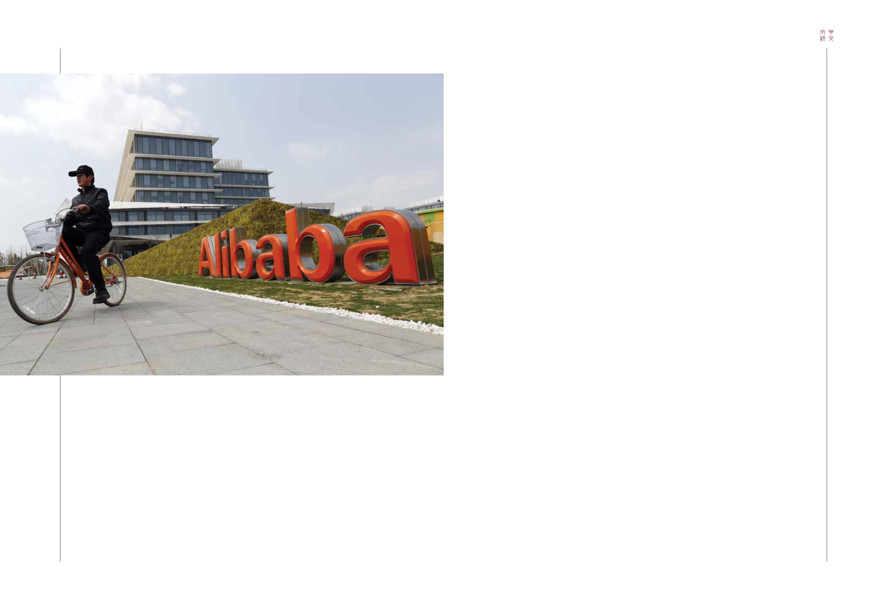

60-61 / 116
60-61 / 116


61
60
SOUTH CHINA ELITE
T
he core message of the recent Morgan Stanley
Blue Paper, “Why We Are Bullish on China” is
that Chinese equities can continue to outperform
emerging-market equities in the future, as they have done
for some time. Cumulative outperformance over the last
15 years for MSCI China versus MSCI EM has been 5,000
basis points, or around 3% per year.
China has also outperformed emerging markets over both
five and 10 years – and not by small amounts. Total returns
have averaged 5% per year in US dollar terms over those
periods, and 13% per year over the last 15 years.
For us, being overweight on China equities in our
recommended allocation to clients investing in the EM
space is not unusual. Our structural bullishness in the 10
years I have covered China equities at Morgan Stanley
is starkly different from that of the consensus amongst
global investors and even EM specialist managers, who
have been and remain underweight China. Indeed,
摩
根士丹利最近發表題為《我們緣何看好中國》
的藍皮書，其核心信息是中國股票市場將延續
過往的趨勢，在未來持續領先於其他新興國家
的股票市場。過去15年，MSCI中國指數對MSCI新興國家指數
的累積領先幅度達5,000個基點，即每年約3%。
以5年和10年為期，中國股票市場的表現亦明顯比其他新興
國家股票市場優勝。以美元計算，5年和10年期的中國股票
總回報率為平均每年5%，15年期則為平均每年13%。
對我們而言，建議投資新興市場的客戶投放大比例資金
在中國股票，並非新奇事。過去10年，我在摩根士丹利負責
中國股票市場，以結構性角度重點投資中國股票市場。這與
環球投資者甚至新興國家投資專家，仍然對中國股票市場投
資不足的共識思維截然不同。誠然，新興國家投資專家在過
去15年，一直對中國股票市場投資不足。以500個基點為基
準，當前他們對中國股票市場投資之不足，甚至到達歷史低
位。
他們為何對中國股票市場憂心重重？是忽略了我們視為
優勢的因素嗎？我們認為，針對中國股票市場的共識思維，
一直過度偏重於宏觀辯論，尤其是債務可持續性、產能過
剩，以及最近的外匯風險等方面，卻沒有深入分析中國股票
市場優異表現背後的原因。在循環週期中，中國股票市場的
平均股本回報率，明顯比其它新興國家股票市場為高，若以
美元計算，其收益亦較高。我們認為，儘管中國經濟的債務
比重上升，但上述現象的根源，並不在於經濟槓桿作用，而
在於中國股票市場正朝著以消費者、服務以及私營企業為導
向的方向發展，而其發展速度亦高於整體經濟。
2005年，MSCI中國指數總市值中，只有5%來自非國營企
業。至2016年，其比重已激增至近50%。我們在藍皮書中預
計，非國營企業在MSCI中國指數總市值中之比重，在2020年
將上升至70%。阿里巴巴和騰訊等無人不知的非國營企業，
比國營企業有更較高的收入增長及較低的債務，而其表現
在循環週期中亦明顯優於大市，其一原因是他們主要涉及資
訊科技、消費者及醫療保健等領域。正如我們在藍皮書中所
指，這些領域將持續驅動中國晉身高收入國家之列。我們亦
列出了50家在新經濟模式下成為「獨角獸」的中國企業。在
首次公開招股前市值已超越10億美元的中國企業，其數目多
於世界其它地區（不包括美國）之總數。
the latter group is running a near record underweight
on China versus the benchmark of 500 basis points
currently, and at no point in the last 15 years have EM
specialists ever been anything but underweight China.
So what is it that the consensus is so worried about
and what are they missing which we think is positive?
In our view, consensus thinking on China has always
been too caught up in the macro debate, particularly
in relation to debt sustainability, excess capacity and
more recently foreign exchange risk. Consensus has
been insufficiently focused on identifying the sources of
China’s outperformance, which lie in the market having
had a materially higher return on equity (ROE) than the
EM average over the cycle, and hence higher earnings
growth in US dollar terms. We believe the roots of that
phenomenon lie not so much in an economy that is
becomingmore leveraged, though it has, but in an equity
market that is evolving faster than the overall economy
by becoming more consumer- and services-oriented as
well as more private sector-driven.
In 2005 only 5% of MSCI China’s market
capitalization was in non-state-owned sectors. By 2016
it was almost half, and we project in our Blue Paper that
non-state-owned firms will be 70% of market cap by
2020. The non-state-owned firms, including household
names like Alibaba and Tencent, have higher revenue
growth and less leverage than their state-owned peers
and have substantially outperformed the market over
the cycle as they operate predominantly in IT, Consumer
and Healthcare, which are the sectors that we argue in
the Blue Paper will continue to drive China’s journey
to high-income status. In our Blue Paper we identify
50 Chinese firms in these New Economy sectors that
are “unicorns.” That is, they achieved private market
valuations of over US$1 billionprior to their initial public
offerings. That is more than the number of unicorns in
the rest of the world (excluding the US) put together.